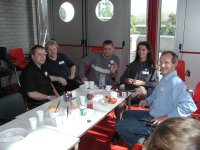
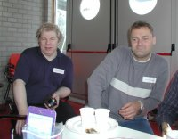
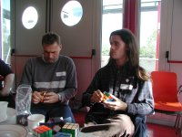

Here are a few pictures from my first (and I hope not the last) Dutch Cube Day that took place in Leiden, The Netherlands on the 6th of October 2002. For me, it was the biggest concentration of cube-crazy minds since the World Championship in 1982. I finally got to meet face to face with many of my on-line friends: Jaap Scherphuis, Olly Hayden, Ton Dennenbroek, Ron van Bruchem, Lars Vandenbergh, and Peter Jansen.
We all had a lot of fun at the meeting, sharing ideas and algorithms. I was told that my (best) cube would make a pretty good muscle-building tool. After trying Ron's or Peter's cubes, I had to agree ... I sure do have some reserves there. So, I ordered some Rubik's Studio cubes from Ton Dennenbroek and asked him for his expert opinion on how to prepare a speedcubing cube instead of a muscle building tool. Thank you Ton! At lunch, Ron asked me to solve the cube at full speed and pulled out his watch. Dan Gosbee pushed his watch back and calmed me down by decisively stating that no one will be measuring anything. However, once I solved the cube, Dan quickly glanced at his watch saying "seventeen". I think, we have the best organizer (or misdirection master) for the championship, guys and girls.
At the end of the Cube Day, there was a competition on the stairs in the hallway. I changed my mind at the last moment, quickly grabbed Ron's cube and joined the competition at the last second. Without warming up and practically zero inspection time, I did a shameful 22 seconds and discredited my reputation in front of people from at least six countries. After the compatition, Ron, Ton, Peter, Olly, Mirek, and myself went to a Chinese restaurant in downtown Leiden. During the dinner, we were doing magic tricks and trying to open Olly's small clear plastic puzzle box (me breaking two nails before finally giving up). After the dinner, we removed our cubes and put up quite a show for the restaurant personnel.
| No, those puzzles were not edible. |  |
| Ton and Ron relaxing after lunch. |  |
| As the really really fast cubers say - it is all just practice ... |  |
| Jessica at the Schiphol airport just before boarding the plane. The cow's head is, unfortunately, obstructing my cube. |
See Ton's or Ron's pages for more pictures from the Dutch Cube Day.
{kind=link}
{kind=link}
{kind=link}
{kind=link}